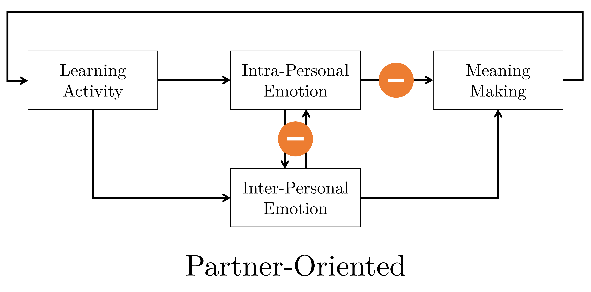
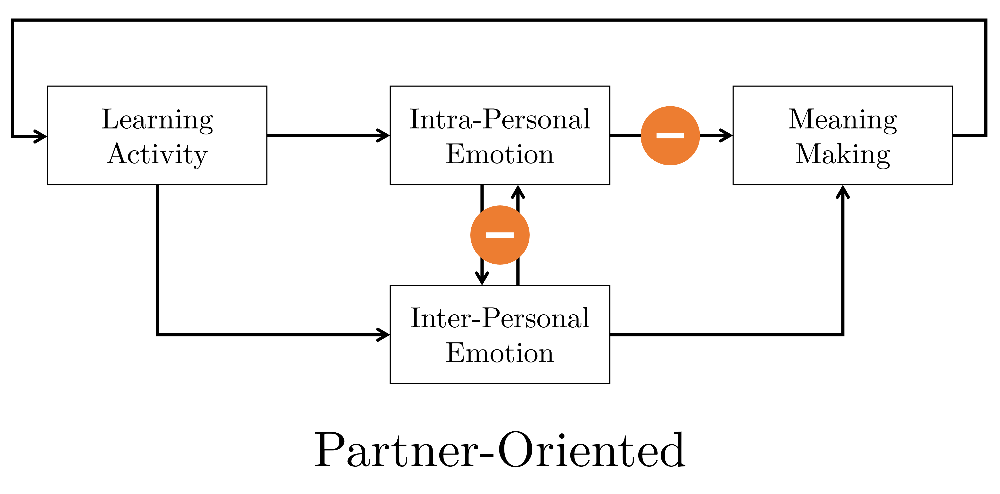
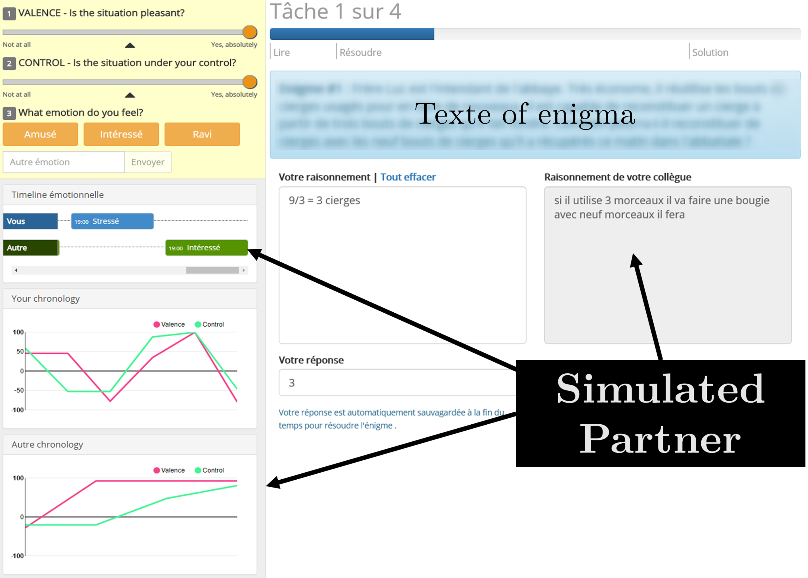

Implementation and Assessment of a Multipurpose Appraisal-Driven
Emotion Awareness Tool Based on Self-Report
With an Application to Computer-Mediated Learning
Environments
Mattia A. Fritz
TECFA, Université de Genève
The rise of affectivism
[...] given the undeniable impact of affective sciences on our
models of brain, mind, and behaviour, it seems relevant to ask
today whether we are now in the era of affectivism.
— Dukes et [63] al., 2021
Learning Cognitive Social Affective
Brackett et al., 2019; Lavoué et al., 2020; Pekrun & Linnenbrink-Garcia, 2014Emotional Awareness

Functional abstract model of emotional awareness derived by the
literature review.
Original figure, Fritz (2023, p. 50)
Original figure, Fritz (2023, p. 50)
-
Modularity
All or only part of the functions -
Opinionated
Self-Report, Appraisal-Driven, Moment-to-Moment -
Open Science/Education
Transparency, replication, sharing, ...
Presentation plan

Tool's Core
Chapters 4 and 5Appraisal-driven emotion
 The dynamic architecture of the component process model, adapted
from Scherer (2010)
The dynamic architecture of the component process model, adapted
from Scherer (2010)
If one knows the results of an individual’s event
appraisal on major checks, one
can approximately predict [...] what
label the person is likely to
use
— Scherer, 2009
Experimental factor
Chapter 7S1 Disentangle awareness
 


S1 Experimental plan
N = 48 students and professionals (29 women, 19 men), aged 18 to
55 (M = 37.3, SD = 10.0)

S1 Experimental task
 Simulated joint problem-solving task to control for any source of emotional triggers/information.Method of assessment
Chapter 8S2 Method

33 students (22 women, 6 men, and 5 not disclosed; M = 32.96, SD =
7.78 with 7 not disclosed) of the course STIC I (Fritz &
Schneider, 2019) in the MALTT.
S2 Perception of usefulness
Ad-hoc Emotional Awareness Usefulness (EAU) scale
| # | Dimension | Item |
|---|---|---|
| 1 | Frequency | I used the tool frequently (e.g. every time I worked for the course). |
| 2 | Affordance | The use of the tool prompted me to share my emotions. |
| 3 | Social Presence | The use of the tool allowed me to feel less lonely during remote learning periods. |
| 4 | Self-Understanding | The use of the tool allowed me to better understand my emotions. |
| 5 | Understanding Others | The use of the tool allowed me to better understand the emotions of my colleagues. |
| 6 | Self-Other Comparison | The use fo the tool allowed me to compare my emotions with those of my colleagues. |
| 7 | Self-Regulation | The use of the tool allowed me to regulate my emotions. |
S2 Perception of usefulness

N = 798 ratings from 30 students over the 7 dimensions on a 1 to
10 scales at 4 different times: Expectation, Demo, Halfway, and
Final.
S2 EAU psychometric indicators
Exploratory Factor Analysis

Reliability/Uni-demension
| \(\omega_h\) | \(\alpha\) | \(\omega_{tot}\) | Uni | r.fit | fa.fit | max.split | min.split | mean.r | med.r |
|---|---|---|---|---|---|---|---|---|---|
| 0.6 | 0.86 | 0.9 | 0.86 | 0.92 | 0.93 | 0.88 | 0.71 | 0.46 | 0.35 |
Is it worth it?
Chapters 6, 8 and General discussionAppraising the appraisal
Good predictive accuracy (80%), but Valence and Control/Power not independent
\(M_\rho\) = 0.47 (0.43). See also Molinari et al. (2016) or Scherer & Fontaine (2019).
N-Dimensional Affective Spaces
Two dimensions are not necessarily the best way to represent emotions (Scherer & Fontaine, 2019)Open Science/Education
 Toolbox to
create, share, credit instances of an EAT according to interests and
needs.
Toolbox to
create, share, credit instances of an EAT according to interests and
needs.
Thank you for your attention !
Presentation created with
Reveal.js.